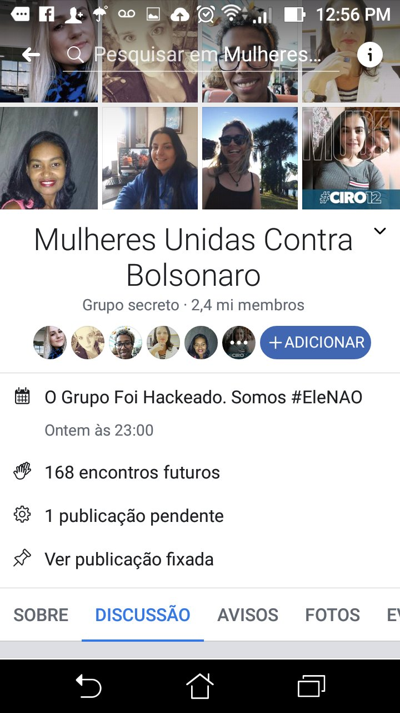

#EleNão means “Not him” in Portuguese. It became a major slogan opposing Jair Bolsonaro during Brazil’s 2018 presidential election. Women-led demonstrations and online posts helped spread the hashtag, which appeared on signs, profile pictures, event announcements, and memes.
Bolsonaro supporters and other counter-mobilisers responded with #EleSim (“Yes him”) and similar messages. The two short slogans made the election feel like a direct choice: reject Bolsonaro or support him. They were also part of wider arguments about gender, national identity, and Brazil’s future.
The archive includes a screenshot related to the Facebook group “Mulheres Unidas Contra Bolsonaro” and a post using “Ele nunca!” (“Never him!”) with #EleNão and #EleNunca. These items show some of the different messages that circulated during the wider online mobilisation.
Memes in this entry
The images below show examples connected to this topic, with links to their recorded sources and additional item details.

MEME_BR2018_003
ARCHIVE ITEM · MEME_BR2018_003
Mulheres Unidas Contra Bolsonaro. Grupo secreto · 2,4 mi membros. O Grupo Foi Hackeado. Somos #EleNAO
The spreadsheet records a screenshot concerning the Facebook group Mulheres Unidas Contra Bolsonaro; it is evidence of a mobilisation artefact, not a full measure of membership or reach.
Mulheres Unidas Contra Bolsonaro. Grupo secreto · 2,4 mi membros. O Grupo Foi Hackeado. Somos #EleNAO
Context summary
A screenshot of the large Facebook group Mulheres Unidas Contra Bolsonaro records the #EleNão opposition movement and a claim that the group had been hacked.